Free
computer Tutorials
|
Free
computer Tutorials
|
|
 HOME HOME
|
|
||||
Microsoft Excel 2007 to 2010Scenarios in ExcelScenarios come under the heading of "What-If Analysis" in Excel. They are similar to tables in that you are changing values to get new results. For example, What if I reduce the amount I'm spending on food? How much will I have left then? Scenarios can be saved, so that you can apply them with a quick click of the mouse. An example of a scenario you might want to create is a family budget. You can then make changes to individual amounts, like food, clothes, or fuel, and see how these changes effect your overall budget.
We'll see how they work now, as we tackle a family budget. So, create the spreadsheet below: 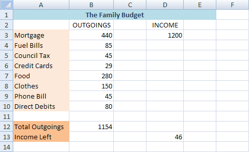 The figure in B12 above is just a SUM function, and is your total debts. The figure in D3 is how much you have to spend each month (not a lot!). The figure in D13 is how much you have left after you deduct all your debts. With only 46 pounds spending money left each month, clearly some changes have to be made. We'll create a scenario to see what effect the various budgets cuts have.
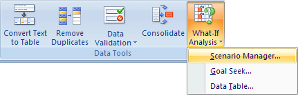 When you click Scenario Manager, you should the following dialogue box: 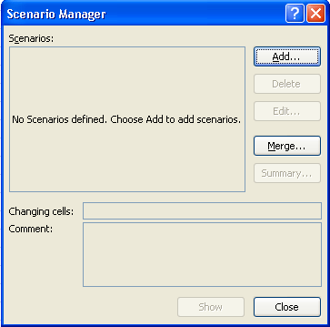 We want to create a new scenario. So click the Add button. You'll then get another dialogue box popping up: 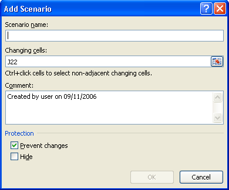 The J22 in the image is just whatever cell you had selected when you brought up the dialogue boxes. We'll change this. First, type a Name for your Scenario in the Scenario Name box. Call it Original Budget.
Excel now needs you to enter which cells in your spreadsheet will be changing. In this first scenario, nothing will be changing (because it's our original). But we still need to specify which cells will be changing. Let's try to reduce the Food bill, the Clothes Bill, and the Phone bill. These are in cells B7 to B9 in our spreadsheet. So in the Changing Cells box, enter B7:B9 Don't forget to include the colon in the middle! But your Add Scenario
box should look like this: 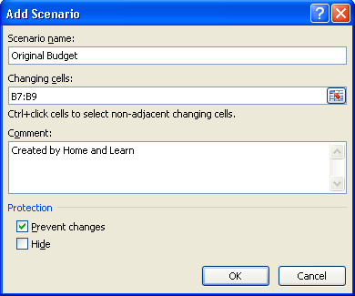 Click OK and Excel will ask you for some values: 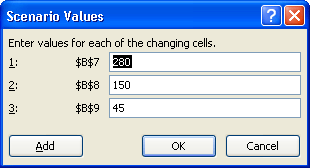 We don't want any values to change in this first scenario, so just click OK. You will be taken back to the Scenario Manager box. It should now look like this: 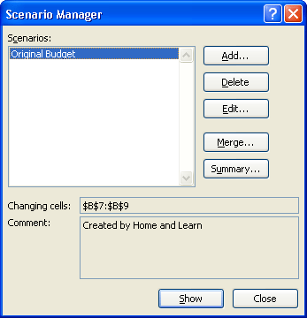 Now that we have one scenario set up, we can add a second one. This is where we'll enter some new values - our savings. Click the Add button again. You'll get the Add Scenario dialogue box back up. Type a new Name, something like Budget Two. The Changing Cells area should already say B7:B9. So just click OK. You will be taken to the Scenario Values dialogue box again. This time,
we do want to change the values. Enter the same ones as in the image
below: 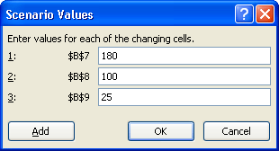 These are the new values for our Budget. Click OK and you'll be taken back to the Scenario Manager. This time, you'll have two scenarios to view: 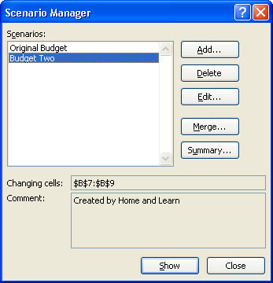 As you can see, we have our Original Budget, and Budget Two. With Budget Two selected, click the Show button at the bottom. The values in your spreadsheet will change, and the new budget will be calculated. The image below shows what it looks like in the spreadsheet: 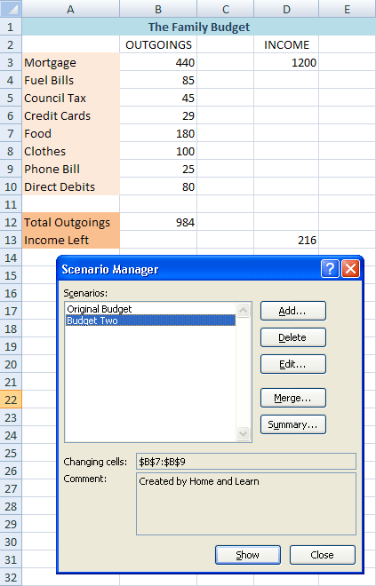 Click on the Original Budget to highlight it. Then click the Show button. The first values will be displayed! Click the Close button on the dialogue box when you're done.
How to Create a Report from a ScenarioAnother thing you can do with a scenario is create a report. To create a report from your scenarios, do the following:
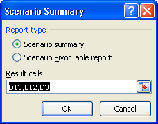 What you're doing here is selecting cells to go in your report. To change the cells, click on your spreadsheet. Click individual cells by holding down the CTRL key on your keyboard, and clicking a cell with your left mouse button. Select the cells D3, B12 and D13. If you want to get rid of a highlighted cell, just click inside it again with the CTRL key held down. Click OK when you've selected the cells. Excel will then create your Scenario Summary: 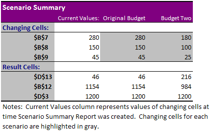 All right, it's not terribly easy to read, but it looks pretty enough. Perhaps it will be enough to convince our family to change their ways. Unlikely, but a nice diagram never hurts!
We'll now move on to Goal Seek. |
|||||
|